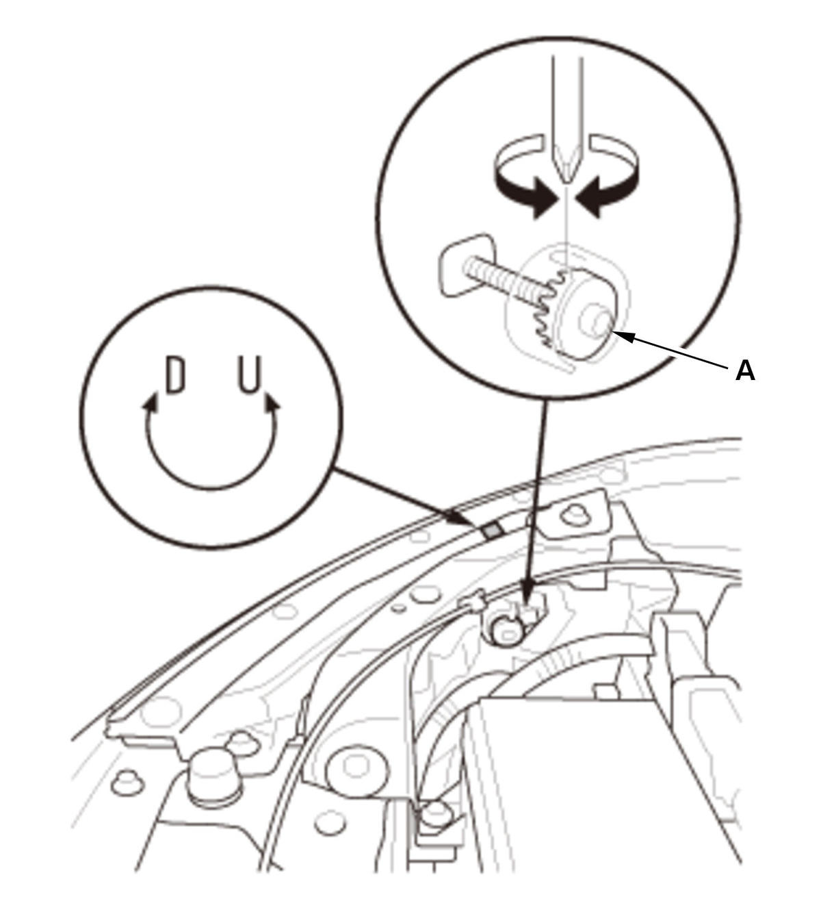
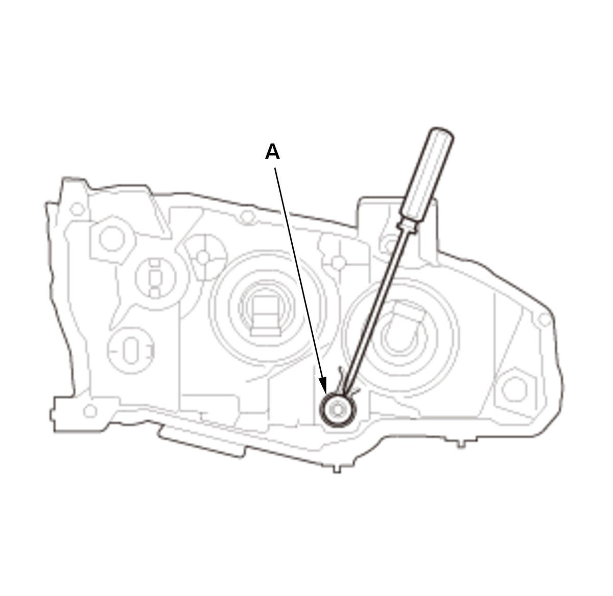
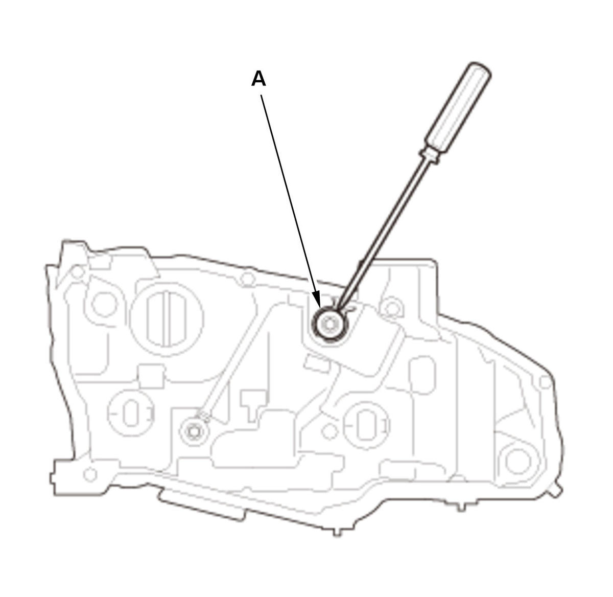

Headlight Adjustment: Adjustment
- Headlight - Adjust
Without LED headlight With LED headlight
WARNING: Headlights become very hot during use; do not touch them or cover them with such items like fender covers immediately after they have been turned off.
Before adjusting the headlights:
- Park the vehicle on a level surface.
- Make sure the tire pressures are correct.
- The driver or someone who weighs the same should sit in the driver's seat (or use an equivalent weight).
- Unload the vehicle.
1. Clean the outer lens so that you can see the center (A) of the headlights.
2. Park the vehicle so that the center mark of the headlight (A) is 7.5 m (24.6 ft) away from a wall or screen (B). 3. Measure the height of the headlight's center mark (A), then on the wall or screen (B), mark the same height of the headlights with masking tape in a straight horizontal line (C). 4. Turn on the low beam headlights. 5. To see if the headlights are adjusted properly, observe the beams of light projected on the wall or screen. The highest edge or "cut line" (A) of the headlights should be equal with the masking tape (B).
NOTE: To help determine if a headlight is out of adjustment, block one of the beams with a large piece of cardboard or equivalent, and observe the other beam on the wall or screen. Repeat this for the other headlight.



Courtesy of HONDA, U.S.A., INC.HONDA, U.S.A., INC.HONDA, U.S.A., INC.
Without LED headlightWith LED headlight
6. If adjustment is necessary, open the hood and adjust the headlights to local requirements by turning the adjuster (A). NOTE: The R and L adjusters are not applicable. The headlights can only be adjusted up and down.